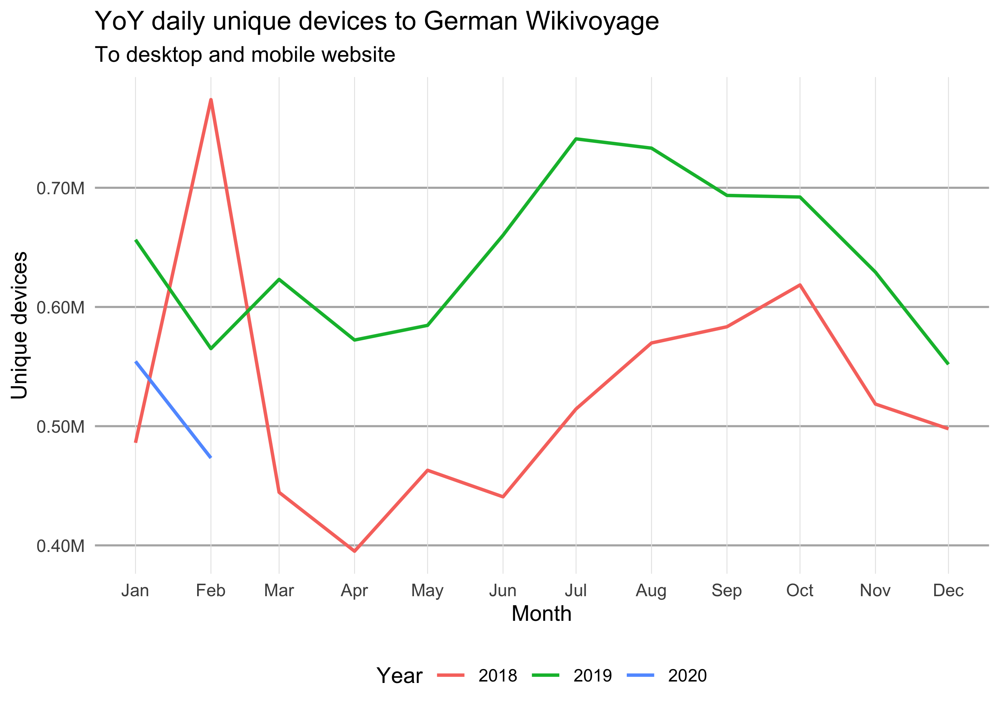

{purrr} makes it very easy to run multiple {waxer} queries programmatically, and {dplyr} makes it easy to manipulate the obtained data for visualization with {ggplot2}. In some of these examples we will use purrr::map to apply a {waxer} function to a set of values we’re interested in while keeping all the other parameters constant. For example:
fun <- function(a, b) {
return(a + b)
}
map(-1:1, fun, b = 2)
#> [[1]]
#> [1] 1
#>
#> [[2]]
#> [1] 2
#>
#> [[3]]
#> [1] 3Notice that the output is a list, which is map’s default behavior. We can also specify the output type by using the different flavors of map:
map_dbl(-1:1, fun, b = 2)
#> [1] 1 2 3
map_chr(-1:1, fun, b = 2)
#> [1] "1.000000" "2.000000" "3.000000"Since the output of {waxer}’s API-querying functions is always a tibble (an extension of a data.frame), we will mostly be using the map_dfr function which stitches several tibbles into a one (using dplyr::bind_rows).
Traffic-based data
Top viewed articles
Top 1000 viewed articles each month from Jan 2019 to March 2019 on English Wikipedia:
top_viewed <- wx_top_viewed_articles(
project = "en.wikipedia",
granularity = "monthly",
start_date = "20190101",
end_date = "20190301"
)Top 3 articles from each month:
top_viewed %>%
# Exclude main page and other non-article pages:
filter(article != "Main_Page", !grepl("^(Special|Wikipedia)\\:.*", article)) %>%
group_by(date) %>%
top_n(3, views)
#> # A tibble: 9 x 4
#> # Groups: date [3]
#> date article views rank
#> <date> <chr> <int> <int>
#> 1 2019-01-01 Ted_Bundy 7293874 3
#> 2 2019-01-01 Louis_Tomlinson 5231127 4
#> 3 2019-01-01 XHamster 4039614 6
#> 4 2019-02-01 Freddie_Mercury 6464633 3
#> 5 2019-02-01 Louis_Tomlinson 5497023 4
#> 6 2019-02-01 Grover 4975383 5
#> 7 2019-03-01 Captain_Marvel_(film) 7070703 3
#> 8 2019-03-01 Luke_Perry 6362644 4
#> 9 2019-03-01 Us_(2019_film) 4590483 6Unique devices
To obtain the monthly estimated number of unique devices that visited German Wikivoyage from Jan 2018 to Feb 2020:
unique_devices <- wx_unique_devices(
project = "de.wikivoyage",
granularity = "monthly",
access_method = "all",
start_date = "20180101",
end_date = "20200228"
)Which we can visualize with a periodicity plot:
library(lubridate)
unique_devices$year <- factor(year(unique_devices$date))
year(unique_devices$date) <- 2018
ggplot(unique_devices) +
geom_line(aes(x = date, y = devices, color = year), size = 0.8) +
scale_y_continuous(minor_breaks = NULL, labels = scales::label_number(scale = 1e-6, suffix = "M")) +
scale_x_date(date_labels = "%b", date_breaks = "1 month", minor_breaks = NULL) +
labs(
title = "YoY daily unique devices to German Wikivoyage",
subtitle = "To desktop and mobile website",
x = "Month", y = "Unique devices", color = "Year"
) +
theme_minimal() +
theme(
panel.grid.major.x = element_line(color = "gray90", size = 0.2),
panel.grid.major.y = element_line(color = "gray70", size = 0.5),
legend.position = "bottom"
)
Active editors
Suppose we wanted to get the daily number of non-bot active editors of content pages on English Wikipedia in January 2020. This is easy with {waxer}’s wx_active_editors function:
active_editors <- wx_active_editors(
project = "en.wikipedia", editor_type = "user", page_type = "content",
start_date = "20200101", end_date = "20200131"
)head(active_editors)
#> # A tibble: 6 x 2
#> date editors
#> <date> <int>
#> 1 2020-01-01 9072
#> 2 2020-01-02 10522
#> 3 2020-01-03 10475
#> 4 2020-01-04 9880
#> 5 2020-01-05 9941
#> 6 2020-01-06 10834By activity level
Suppose we wanted to visualize these daily counts broken down by activity level:
activity_levels <- c(
"low" = "1-4",
"medium" = "5-24",
"high" = "25-99",
"very high" = "100+"
)
active_editors_by_activity <- map_dfr(
activity_levels,
wx_active_editors,
project = "en.wikipedia", editor_type = "user", page_type = "content",
start_date = "20200101", end_date = "20200131",
.id = "activity_level"
)active_editors_by_activity <- active_editors_by_activity %>%
mutate(
activity_level = factor(
activity_level,
names(activity_levels),
sprintf("%s (%s edits)", names(activity_levels), activity_levels)
)
)
ggplot(active_editors_by_activity, aes(x = date, y = editors)) +
geom_col(aes(fill = activity_level)) +
scale_x_date(date_labels = "%a, %d %b") +
scale_fill_brewer("Activity level", palette = "Set1") +
labs(
title = "Number of English Wikipedia article editors in January 2020",
subtitle = "Broken down by activity level (number of edits)"
) +
theme_minimal() +
theme(legend.position = "bottom")
By wiki
Similarly, we can obtain the (monthly) totals for several Wikipedias. This time we’re not breaking down by activity level (which is the default behavior for this function):
wikis <- c(
"English" = "en.wikipedia",
"Russian" = "ru.wikipedia"
)
active_editors_by_wiki <- map_dfr(
wikis,
wx_active_editors,
editor_type = "user", page_type = "content",
start_date = "20150101", end_date = "20200301",
granularity = "monthly",
.id = "language"
)ggplot(active_editors_by_wiki) +
geom_line(aes(x = date, color = language, y = editors)) +
scale_x_date(date_breaks = "1 year", minor_breaks = NULL, date_labels = "%b\n%Y") +
scale_y_continuous(minor_breaks = NULL) +
facet_wrap(~ language, ncol = 1, scales = "free_y") +
labs(
title = "Number of English & Russian Wikipedia article editors",
subtitle = "Monthly total since January 2018",
y = "Active editors per month"
) +
theme_minimal() +
theme(legend.position = "bottom")